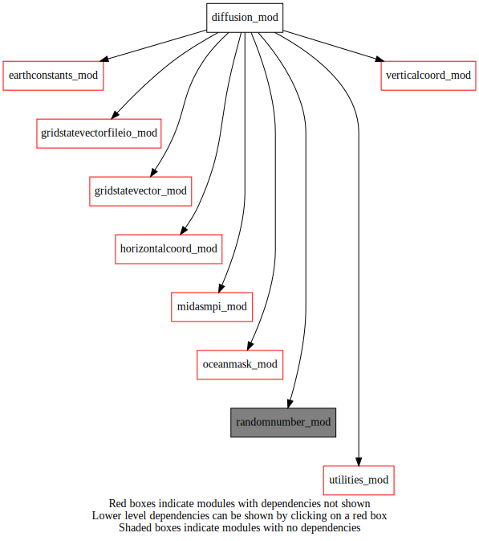
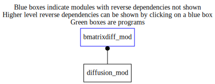

Dependency Diagrams:
 Direct Dependency Diagram¶
 Reverse Dependency Diagram¶
Description
MODULE diffusion_mod (prefix=’diff’ category=’4. Data Object transformations’)
- Purpose
Diffusion operator and storage of related diffusion configuration used to model background-error horizontal correlations. Both explicit and implicit formulations are included, with implicit being preferred when using large correlation length scales relative to the grid spacing. For implicit the MPI topology must have npex=1, i.e. 1xNPEYxNUMTHREADS. A 2D MPI topology can be used for the explicit formulation.
- Reference
Weaver, A. T., and P. Courtier, 2001: Correlation modelling on the sphere using a generalized diffusion equation. Q. J. R. Meteorol. Soc., 127, 1815-1846.
- Basic equations
Lcorr^2 = 2*k*dt*numt (1) stab = k*dt/dx^2 (2)
Quick access
- Types
- Routines
diff_csqrt(),diff_csqrtadj(),diff_finalize(),diff_setup(),diffusion1x_implicit(),diffusion1y_implicit(),diffusion_explicit(),transposelattolonbands(),transposelontolatbands()Needed modules
midasmpi_mod: MODULE midasMpi_mod (prefix=’mmpi’ category=’8. Low-level utilities and constants’)
horizontalcoord_mod: MODULE HorizontalCoord_mod (prefix=’hco’ category=’7. Low-level data objects’)
verticalcoord_mod: MODULE verticalcoord (prefix=’vco’ category=’7. Low-level data objects’)
oceanmask_mod: MODULE oceanMask_mod (prefix=’ocm’ category=’7. Low-level data objects’)
earthconstants_mod: MODULE earthConstants_mod (prefix=’ec’ category=’8. Low-level utilities and constants’) Prefixes: ec_ (Earth constants), for miscellaneous values from diverse sources
randomnumber_mod: MODULE randomNumber_mod (prefix=’rng’ category=’8. Low-level utilities and constants’)
utilities_mod: MODULE utilities_mod (prefix=’utl’ category=’8. Low-level utilities and constants’)
gridstatevector_mod: MODULE gridStateVector_mod (prefix=’gsv’ category=’6. High-level data objects’)
gridstatevectorfileio_mod: MODULE gridStateVectorFile_mod (prefix=’gio’ category=’4. Data Object transformations’)Types
- type diffusion_mod/struct_diff¶
number of grid points in x and y directions (includes perimeter of land points)
- Type fields
% cosyhalf (*) [real ,allocatable]
% cosyinv (*) [real ,allocatable]
% cosyinvsq (*) [real ,allocatable]
% diff1x_ap (*,*) [real ,allocatable]
% diff1x_bp_inv (*,*) [real ,allocatable]
% diff1x_c (*,*) [real ,allocatable]
% diff1y_ap (*,*) [real ,allocatable]
% diff1y_bp_inv (*,*) [real ,allocatable]
% diff1y_c (*,*) [real ,allocatable]
% dlat [real ] :: grid spacing in radians
% dlon [real ]
% dt [real ]
% khalfx (*,*) [real ,allocatable]
% khalfy (*,*) [real ,allocatable]
% lambda (*,*) [real ,allocatable]
% latindexignore [integer ]
% latperpe [integer ]
% latperpemax [integer ]
% lonperpe [integer ]
% lonperpe_transpose [integer ]
% lonperpemax [integer ]
% lonperpemax_transpose [integer ]
% mhalfx (*,*) [real ,allocatable]
% mhalfy (*,*) [real ,allocatable]
% mylatbeg [integer ]
% mylatend [integer ]
% mylonbeg [integer ]
% mylonbeg_transpose [integer ]
% mylonend [integer ]
% mylonend_transpose [integer ]
% ni [integer ]
% nj [integer ]
% numiterimp [integer ]
% numt [integer ]
% useimplicit [logical ]
% winv (*,*) [real ,allocatable]
% winvsqrt (*,*) [real ,allocatable]
% wsqrt (*,*) [real ,allocatable]
Variables
Subroutines and functions
- function diffusion_mod/diff_setup(variableindex, bdiff_varnamelist, hco, vco, corr_len, stab, numbersamples, useimplicit, latindexignore)¶
- Purpose
set up diffusion operator
- Arguments
variableindex [integer ,in] :: Variable index in bdiff_varNameList(:)
bdiff_varnamelist (*) [character ,in] :: list of 2D analysis variables
hco [struct_hco ,inout,pointer] :: Horizontal grid structure
vco [struct_vco ,in,pointer] :: Vertical grid structure
corr_len [real ,in] :: Horizontal correlation length scale (km);
stab [real ,in] :: Stability criteria (definitely < 0.5)
numbersamples [integer ,in] :: Number of samples to estimate normalization factors by randomization.
useimplicit [logical ,in] :: Indicate to use the implicit formulation
latindexignore [integer ,in] :: Number of grid points to ignore near poles
- Return
diff_setup [integer ]
- Called from
- Call to
utl_abort(),mmpi_setup_latbands(),mmpi_setup_lonbands(),ocm_readmaskfromfile(),ocm_deallocate(),gsv_allocate(),gsv_zero(),gio_readfromfile(),gsv_deallocate(),utl_fstlir_r4(),rng_setup(),rng_gaussian(),diffusion1x_implicit(),transposelattolonbands(),diffusion1y_implicit(),transposelontolatbands(),diffusion_explicit()
- subroutine diffusion_mod/diff_finalize(diffid)¶
- Purpose
To finalize the diffusion operator module, and to free up memory.
- Arguments
diffid [integer ,in]
- subroutine diffusion_mod/diffusion_explicit(diffid, xin, xout)¶
- Purpose
To compute Lsqrt*xin (diffusion over numt/2 timesteps), and to specify initial conditions
- Arguments
diffid [integer ,in]
xin (*,*) [real ,in]
xout (*,*) [real ,out]
- Called from
- subroutine diffusion_mod/diff_csqrt(diffid, xin, xout)¶
- Arguments
diffid [integer ,in]
xin (diff(diffid)%mylonend-(diff(diffid)%mylonbeg)+1,diff(diffid)%mylatend-(diff(diffid)%mylatbeg)+1) [real ,in]
xout (diff(diffid)%mylonend-(diff(diffid)%mylonbeg)+1,diff(diffid)%mylatend-(diff(diffid)%mylatbeg)+1) [real ,out]
- Called from
- Call to
diffusion1x_implicit(),transposelattolonbands(),diffusion1y_implicit(),transposelontolatbands(),diffusion_explicit()
- subroutine diffusion_mod/diff_csqrtadj(diffid, xin, xout)¶
- Arguments
diffid [integer ,in]
xin (diff(diffid)%mylonend-(diff(diffid)%mylonbeg)+1,diff(diffid)%mylatend-(diff(diffid)%mylatbeg)+1) [real ,in]
xout (diff(diffid)%mylonend-(diff(diffid)%mylonbeg)+1,diff(diffid)%mylatend-(diff(diffid)%mylatbeg)+1) [real ,out]
- Called from
- Call to
transposelattolonbands(),diffusion1y_implicit(),transposelontolatbands(),diffusion1x_implicit(),diffusion_explicit()
- subroutine diffusion_mod/transposelattolonbands(diffid, xin, xout)¶
- Purpose
Perform an MPI transposition for a 2D array between latitude bands and longitude bands.
- Arguments
diffid [integer ,in]
xin (diff(diffid)%ni,diff(diffid)%mylatend-(diff(diffid)%mylatbeg)+1) [real ,in]
xout (diff(diffid)%mylonend_transpose-(diff(diffid)%mylonbeg_transpose)+1,diff(diffid)%nj) [real ,out]
- Called from
- subroutine diffusion_mod/transposelontolatbands(diffid, xin, xout)¶
- Purpose
Perform an MPI transposition for a 2D array between longitude bands and latitude bands.
- Arguments
diffid [integer ,in]
xin (diff(diffid)%mylonend_transpose-(diff(diffid)%mylonbeg_transpose)+1,diff(diffid)%nj) [real ,in]
xout (diff(diffid)%ni,diff(diffid)%mylatend-(diff(diffid)%mylatbeg)+1) [real ,out]
- Called from
- subroutine diffusion_mod/diffusion1x_implicit(diffid, xin, xout)¶
- Purpose
To compute Lsqrt*xin (diffusion over 1 timestep, loop over timesteps is external to the subroutine).
- Arguments
diffid [integer ,in]
xin (diff(diffid)%ni,diff(diffid)%mylatend-(diff(diffid)%mylatbeg)+1) [real ,in]
xout (diff(diffid)%ni,diff(diffid)%mylatend-(diff(diffid)%mylatbeg)+1) [real ,out]
- Called from
- subroutine diffusion_mod/diffusion1y_implicit(diffid, xin, xout)¶
- Purpose
To compute Lsqrt*xin (diffusion over 1 timestep, loop over timesteps is external to the subroutine).
- Arguments
diffid [integer ,in]
xin (diff(diffid)%mylonend_transpose-(diff(diffid)%mylonbeg_transpose)+1,diff(diffid)%nj) [real ,in]
xout (diff(diffid)%mylonend_transpose-(diff(diffid)%mylonbeg_transpose)+1,diff(diffid)%nj) [real ,out]
- Called from
{kind=link}
{kind=link}